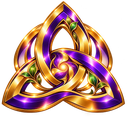

Real
Вертикаль 9:16
Сцена · 12 авг · 0:42
«Короткая фраза-манифест персонажа.»

Главная идея персонажа — одна-две строки о том, ради чего он здесь.
Мечта персонажа — образ будущего, к которому он движется.
Фильмы, сцену, сообщество или вещь, которую персонаж хочет оставить миру.
Направление на ближайшую главу — куда персонаж движется сейчас.